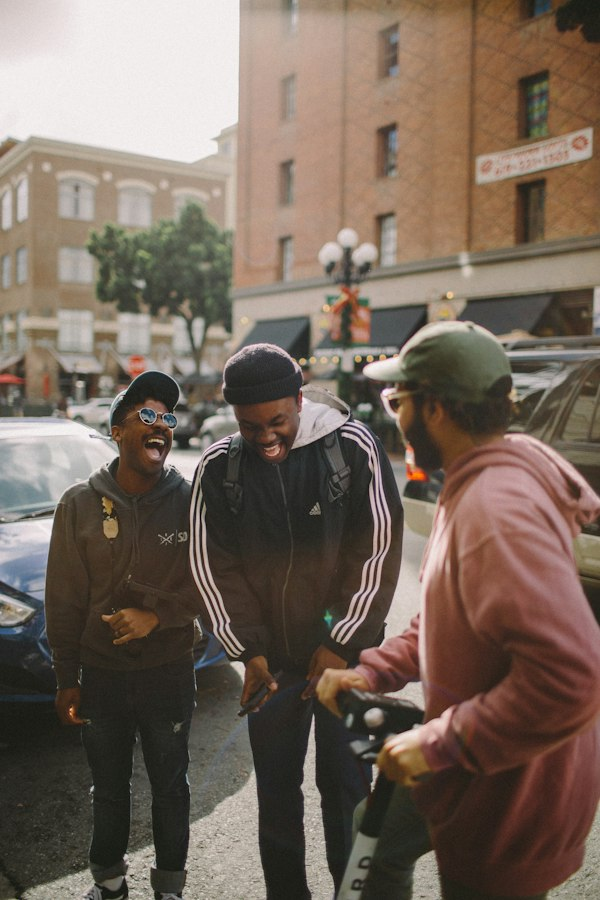
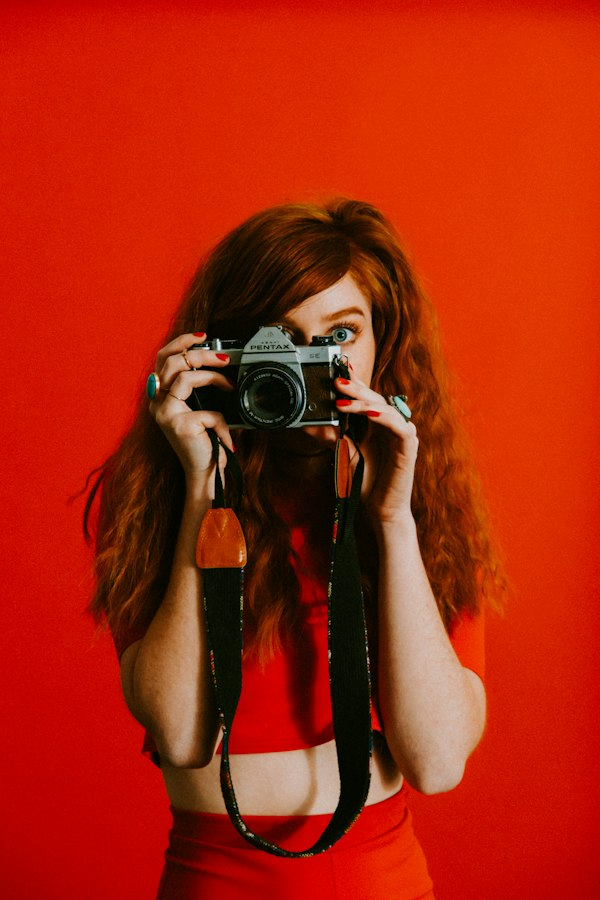

A little moment, a little memory
Turn your moments into something memorable.
Four frames. Your people. Your story. An intimate, browser-based Korean 4-cut photobooth with editorial warmth.
 02
02

03
04framo.
Turn Every Moment Into Frames.
Simple Ritual
More than just a photo.
A little time together, four favorite frames, and something worth keeping.
Get Together
Step into the frame. Gather your favorite people or share a candid solo portrait in front of your device camera. No pressure, just real moments.
Capture Four Moments
Enjoy an authentic 3-second countdown per frame. Switch poses, smile, laugh, and let your natural expressions unfold without rushing.
Keep Your Strip
Curate your aesthetic from four signature frame designs. Download a crisp high-res PNG for digital archives, or print directly to physical paper.
Signature Aesthetics
Find your frame.
Select a frame to preview the mood. Your choice persists directly when you enter the studio.
Classic Burgundy
Warm burgundy background with gold lettering. Rich, nostalgic, and unmistakably FRAMO.
Sunday Morning
Soft ivory mat with warm taupe typography. Quiet, airy, and bathed in natural daylight.
CFD Edition
Car Free Day & street editorial spirit. Monospace coordinates, barcode stamp, and bold accents.
Film Memories
35mm film border details, analog sprocket cues, and a glowing retro orange LED date stamp.
Philosophy
Made for the moments in between.
FRAMO brings a little creativity into everyday moments through photography, thoughtful frames, and technology that feels simple to use.
Designed as a university entrepreneurship prototype, FRAMO merges the intimacy of physical photobooth booths with the instant accessibility of the modern web.
The Studio Awaits
Ready for your four frames?
Step into our photobooth studio right in your browser. Take four unscripted photos, pick your signature frame, and download or print your strip.